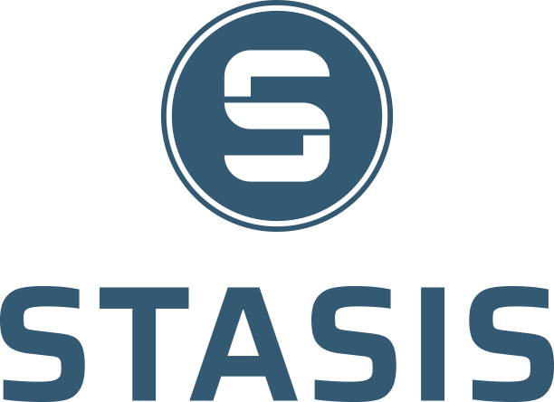

World’s first true digital currency
bridging the gap between decentralized
finance and people
finance and people
Reshaping the future of finance and digital innovation
STASIS represents the next big step: combining the potential of the cryptocurrency market with the reliability of fiat currencies, and becoming a winning choice for any market behavior.
Using Blockchain
STASIS platform is based on the Blockchain technology, the main innovation of the recent years which raised the world of finance to the new level of security and transparency.
Recognition
STASIS platform and issue of cryptocurrency are supported by government authorities, and reserves are the subject of a regular audit. The implementation of distributed ledger technology aka blockchain can help to reimagine the annual and quarterly audits by making the process as real-time and low-cost as possible.
Stability
The cost of one unit of the new currency issued on the STASIS platform is tied to the underlying national currency - be it the euro, won or British pound.

Reserves
Each STASIS stable coin token is fully convertible with its fiat equivalent on a 1:1 value basis The reserves are managed according to strict “money market” mandate by the respectful institution.